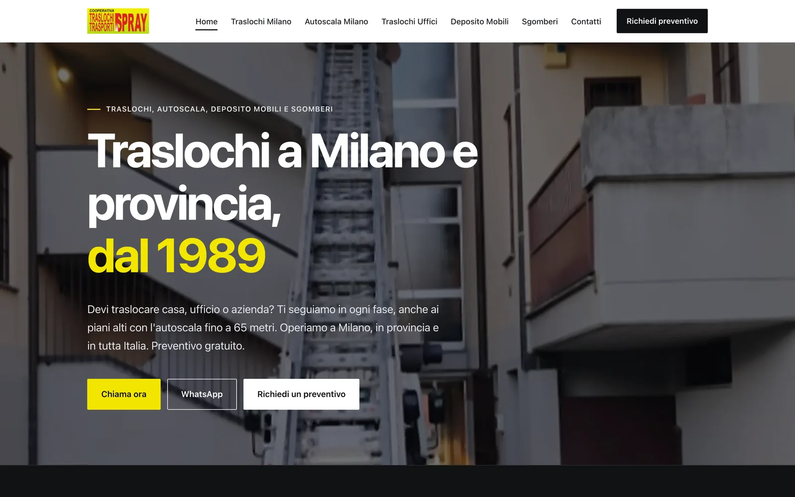
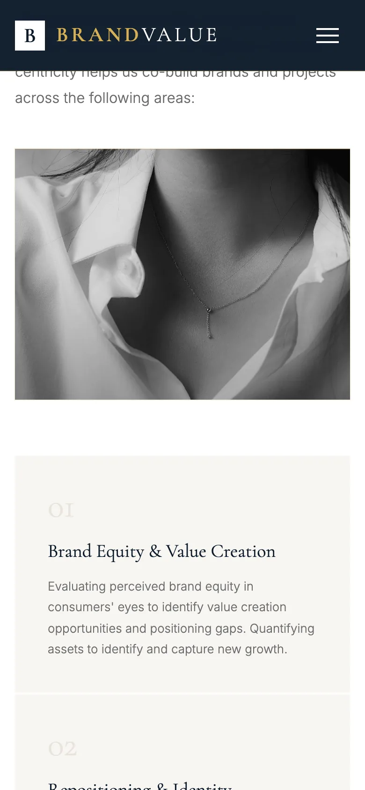
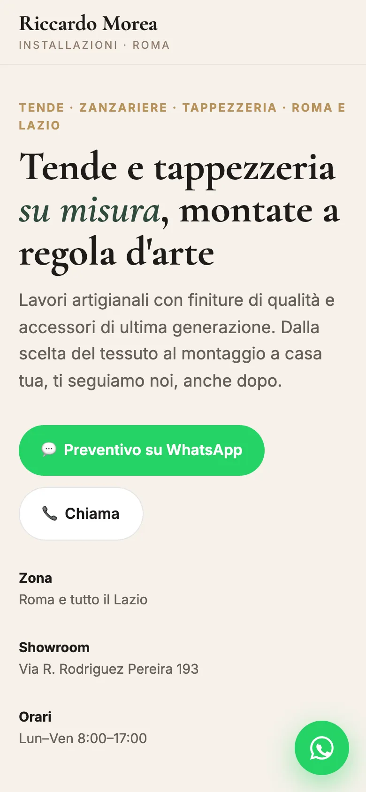
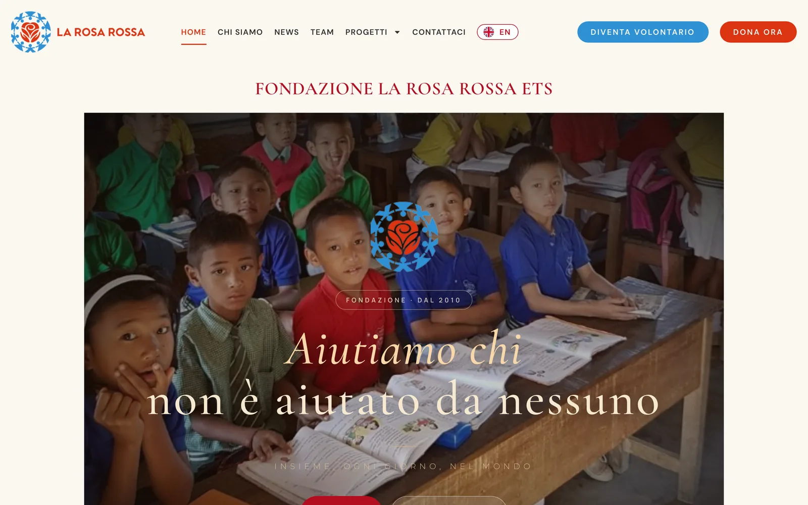

Siti che ho realizzato.
Lavori veri, online: aprili dal telefono e guarda come sono fatti.

Traslochi Spray
Il sito di una cooperativa di traslochi attiva a Milano dal 1989, con autoscala fino a 65 metri, deposito mobili e sgomberi. Chi deve traslocare chiede il preventivo dal sito, su WhatsApp o chiama con un tocco.
- Sito su più pagine: traslochi, autoscala, traslochi per uffici, deposito mobili, sgomberi e contatti
- Modulo per chiedere il preventivo, più pulsanti per chiamare e per WhatsApp
- Su telefono, barra fissa con Chiama, WhatsApp e Preventivo
- Rifatto da zero: il sito precedente era poco leggibile per Google

Brandvalue
Sito di una società di consulenza strategica per marchi di fascia alta, fondata a Parigi nel 2006. Pensato per un pubblico internazionale.
- Sito in inglese
- Menu con le sezioni: chi siamo, competenze, approccio, ricerca
- Prima schermata animata
- Pagina per i contatti

Riccardo Morea
Installazioni di tende, zanzariere e tappezzeria a Roma e nel Lazio. Chi cerca un preventivo lo chiede su WhatsApp o chiama con un tocco.
- Pulsanti per chiamare e per chiedere un preventivo su WhatsApp
- Pulsante WhatsApp sempre visibile mentre scorri
- Orari e indirizzo dello showroom, con il link a Google Maps
- Foto dell'attività

Fondazione La Rosa Rossa
Il sito della Fondazione, attiva dal 2010 con scuole, ospedali e mense nel mondo. Chi vuole aiutare trova subito come donare.
- Sito in italiano e in inglese
- Menu con le diverse sezioni del sito
- Pulsanti «Dona ora» e «Diventa volontario» sempre in evidenza
- Archivio dei progetti, con l'avanzamento delle raccolte
Vuoi vedere anche i siti di esempio, con attività inventate? Sono in fondo alla pagina iniziale.
Il tuo sito potrebbe essere il prossimo.
Bozza gratis in 3 giorni. Se non ti piace, non paghi niente.